청구서·공급사 청구서·수동 전표·경비 줄에 부서나 프로젝트별 비율을 적으면 게시한 전표에서 분석 줄이 생깁니다. 부서별 손익과 예산 대비 실적을 같은 원장에서 보고, 확정한 예산은 사유를 적어야 바꿀 수 있습니다.
무엇을 · 왜#
회계 장부는 계정과목(통신비, 상품매출 등)으로 나뉩니다. 사장은 "영업부가 얼마를 벌고 썼나", "개발부 예산이 얼마 남았나"를 먼저 묻습니다. 관리회계는 장부를 바꾸지 않고 게시한 전표의 줄을 부서·프로젝트 같은 분석 계정에 비율대로 나눠 계산합니다.
| 무엇 | 어떻게 |
|---|---|
| 분석 분배 | 줄마다 {분석 계정: 비율}로 적습니다. 부서·프로젝트 같은 계획마다 합이 100%여야 합니다 |
| 분석 줄 | 회계에서 전표를 게시하면 관리회계에서 만듭니다. 대변 메모·초안으로 되돌림·역분개는 반대 부호의 줄로 남습니다 |
| 기본 분배 규칙 | 줄에 분배가 없으면 제품·제품 분류·거래처·계정과목으로 정한 규칙을 씁니다. 문서를 게시할 때의 규칙만 씁니다 |
| 예산 | 초안 → 확정 → 마감 순서입니다. 확정한 예산은 사유를 적어 예산 변경으로만 고칩니다. 누가·언제·왜·어느 줄을 바꿨는지 이력에 남습니다 |
| 초과 경고 | 공급사 청구서를 게시하거나 경비를 승인할 때 예산을 넘으면 알리지만 막지는 않습니다 |
먼저 알아 둘 것
- 가온가전은 가상 회사이고, 사람·거래처·금액은 모두 가상입니다. 화면은 로컬 Supabase에서 찍었습니다.
- 녹화 전에 판매·청구·회계를 켜고, 구성원 정회계(회계 역할), 거래처 한빛클라우드, 세광애드, 가온유통을 명령으로 넣었습니다.
- 숫자를 읽기 쉽도록 모든 문서를 세금 없이 넣었습니다. 분석 줄은 공급가액만 나눕니다.
- 회계 모듈이 켜져 있어야 관리회계를 켤 수 있습니다.
따라 하기#
- 관리회계 켜기. 관리자로 설정 → 모듈에서 관리회계의 켜기를 누릅니다. 켜기 전에 게시한 문서의 줄에는 분석 분배가 없어 분석 줄이 생기지 않는다고 알려 줍니다. 켜면 메뉴에 관리회계가 생깁니다.
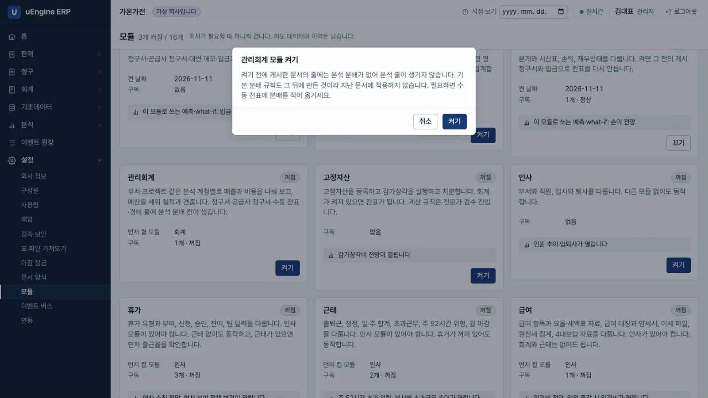
관리회계 켜기 - 분석 계정. 정회계로 관리회계 → 분석 계정 → 새로 만들기에서 코드
S100, 이름영업부, 계획부서로 저장합니다. 같은 방법으로D100 개발부를 만듭니다. 부서와 프로젝트 계획은 처음부터 있습니다.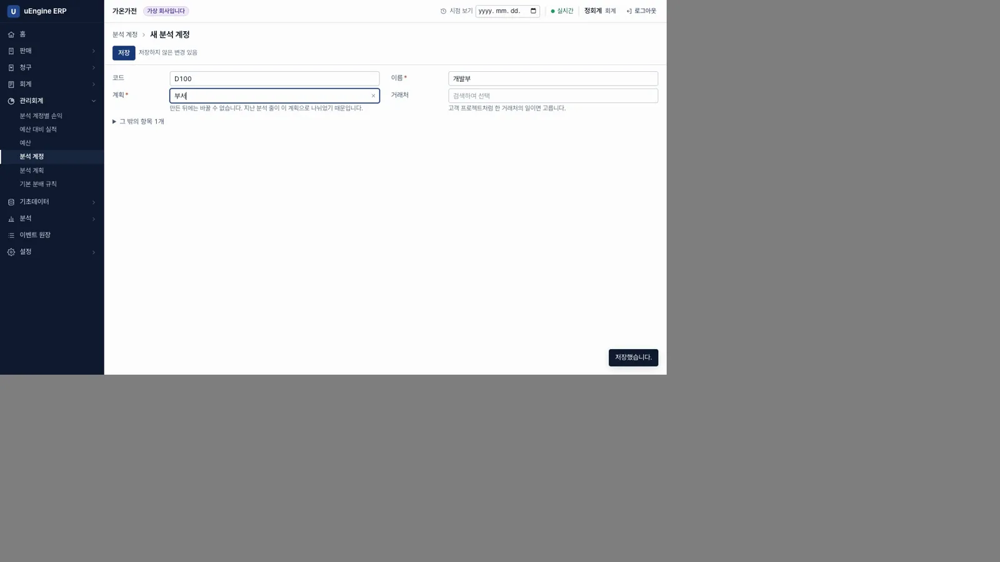
분석 계정 - 예산 세우기. 관리회계 → 예산 → 새로 만들기에서 이름
2026년 4분기 부서 예산, 기간2026-10-01 ~ 2026-12-31을 넣고 예산 줄 셋을 적습니다. 영업부 비용1000000, 개발부 비용2000000, 영업부 매출5000000입니다. 저장하면 번호BU00001이 붙습니다.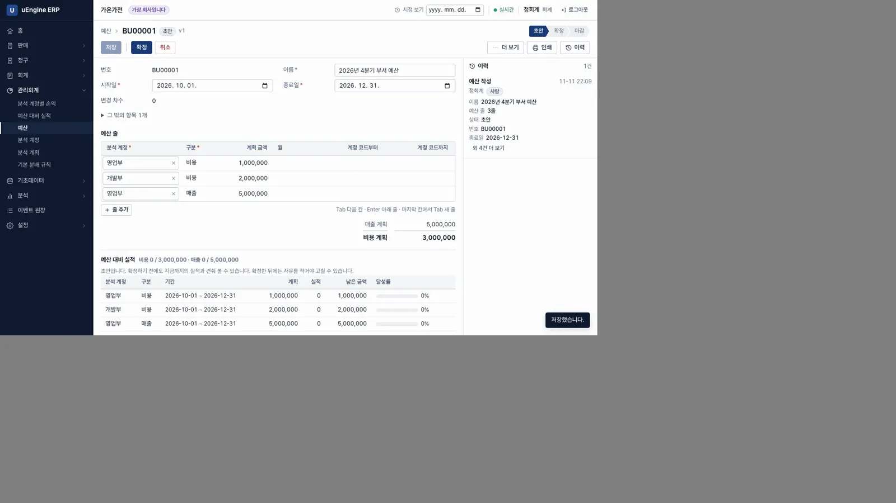
예산 줄 - 확정. 확정을 누릅니다. 확정한 뒤에는 사유를 적어 예산 변경으로만 고칠 수 있다고 알려 줍니다. 아래 예산 대비 실적은 아직 모두 0%입니다.
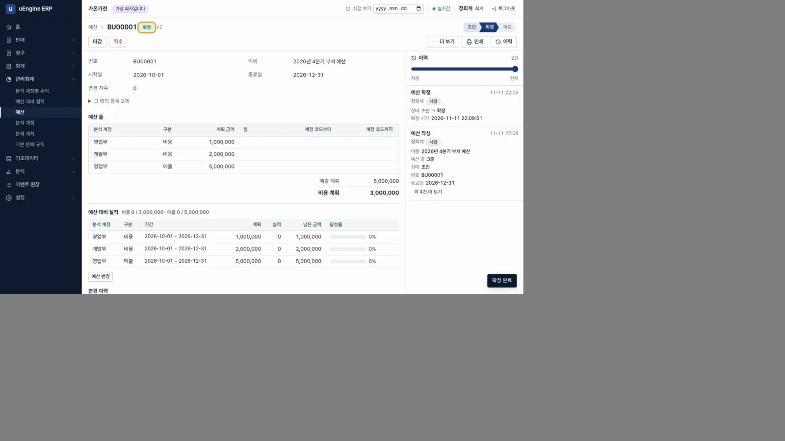
확정 - 청구서 줄. 청구 → 청구서 → 새로 만들기에서 구분
공급사 청구서, 거래처한빛클라우드, 줄서버 사용료1,500,000원, 계정통신비를 넣습니다. 관리회계를 켜서 줄 끝에 분석 분배 칸이 생겼습니다. 비워 두면기본 규칙을 따릅니다.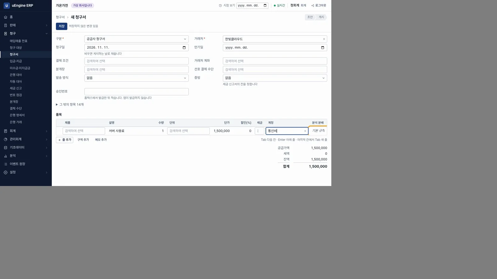
분석 분배 칸 - 나누기. 분석 분배 칸을 눌러
개발부 60,영업부 40을 적습니다. 아래에 계획별 합(부서 100%)이 보입니다. 합이 100이 아니면 적용되지 않습니다. 적용을 누르면 칸에개발부 60% · 영업부 40%가 보입니다.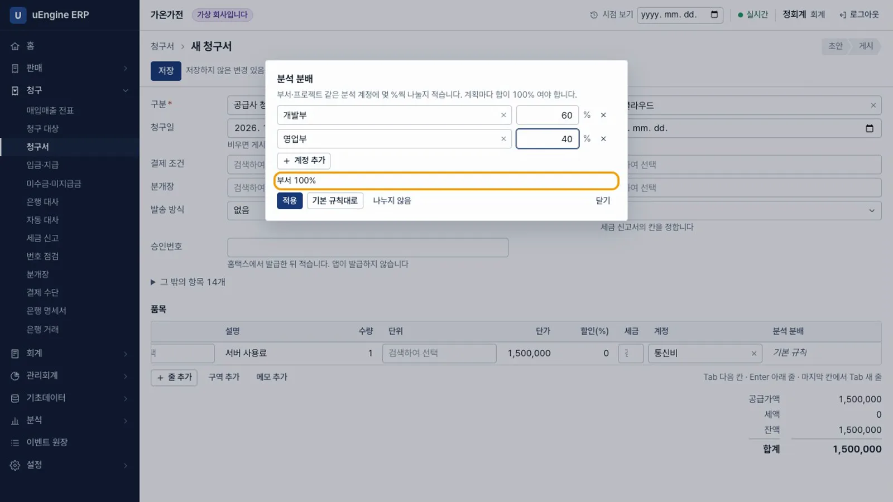
분배 편집 - 게시. 저장하고 게시를 누릅니다. 회계에서 전표를 만들고 관리회계에서 전표의 줄을 분석 줄로 나눕니다.
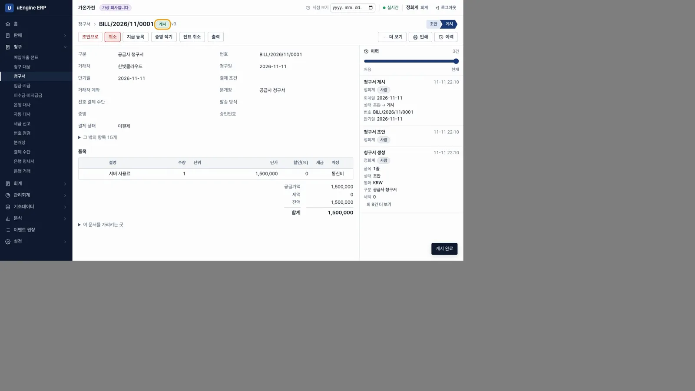
게시 - 분석 계정별 손익. 녹화에서는 이 단계 전에 가온유통 고객 청구서 4,000,000원(영업부 100%)과 세광애드 광고비 공급사 청구서 600,000원(영업부 100%)을 명령으로 게시했습니다. 관리회계 → 분석 계정별 손익을 엽니다. 영업부는 매출 4,000,000, 비용 1,200,000, 이익 2,800,000이고, 개발부는 비용 900,000, 이익 -900,000입니다.
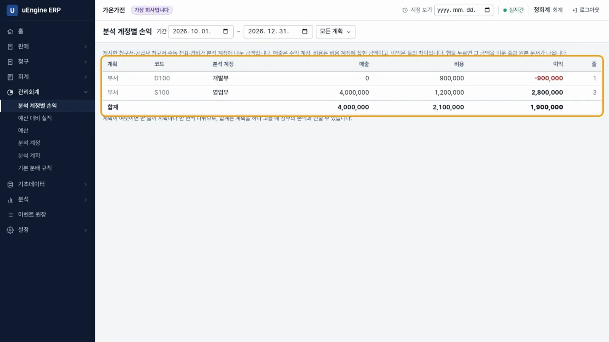
분석 계정별 손익 - 금액의 상세 내역. 영업부 행을 누르면 금액에 포함된 줄 3개가 나옵니다. 서버 사용료는 40%인 -600,000만 반영됐습니다. 매출은 +, 비용은 −입니다.
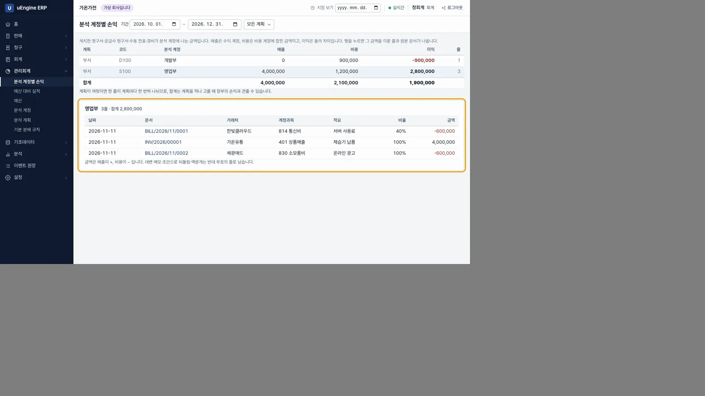
줄 펼치기 - 원본 문서. 문서 번호
BILL/2026/11/0001을 누르면 원본 청구서가 열립니다. 줄에 적은 분배도 그대로 있습니다.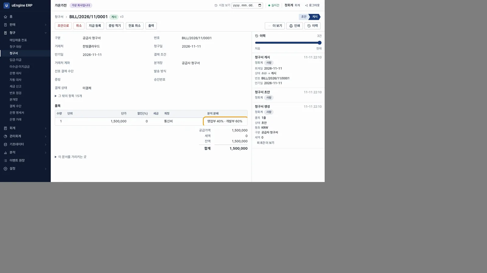
원본 청구서 - 예산 대비 실적. 예산
BU00001을 엽니다. 영업부 비용은 계획 1,000,000, 실적 1,200,000입니다. 남은 금액은 -200,000이며, 실적은 120%로 예산을 넘었습니다. 개발부는 45%, 영업부 매출은 80%를 채웠습니다.
예산 대비 실적 - 예산 변경. 예산 변경을 누르고 영업부 비용 계획을
1600000으로, 사유를전시회 참가가 확정되어 영업부 비용을 늘림으로 적어 저장합니다. 확정한 예산은 사유가 없으면 저장되지 않습니다. 남은 금액이 400,000이 되고 초과 표시가 사라집니다.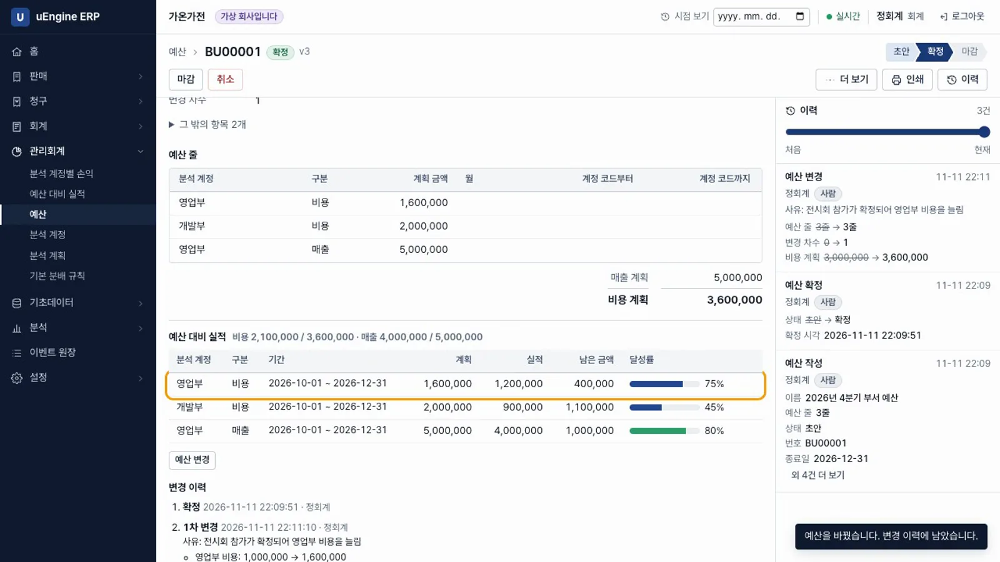
예산 변경 - 변경 이력. 예산 아래 변경 이력에
1차 변경 · 정회계 · 사유 · 영업부 비용: 1,000,000 → 1,600,000이 남습니다. 이력은 원장에 있어 지워지지 않습니다.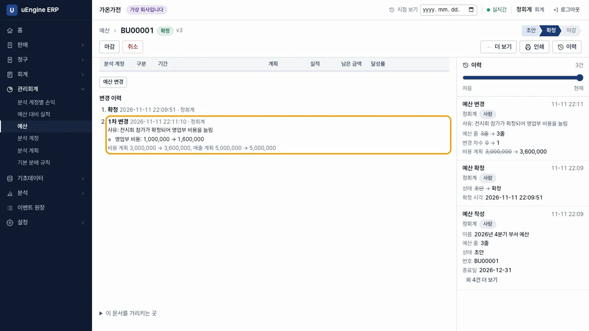
변경 이력 - 초과 경고. 세광애드의 전시회 부스 공급사 청구서 500,000원(영업부 100%)을 게시하려 하면
영업부 예산 1,600,000 중 1,200,000을 썼고, 이 문서로 1,700,000이 되어 100,000 넘습니다. 막지는 않습니다.라는 대화상자가 나옵니다. 그대로 게시를 누릅니다.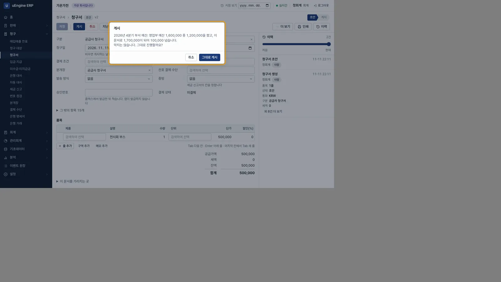
초과 경고 - 모든 예산 보기. 관리회계 → 예산 대비 실적에서 모든 예산을 변경 차수와 함께 봅니다. 영업부 비용 실적은 1,700,000이며, 106.3%로 예산을 넘었습니다.
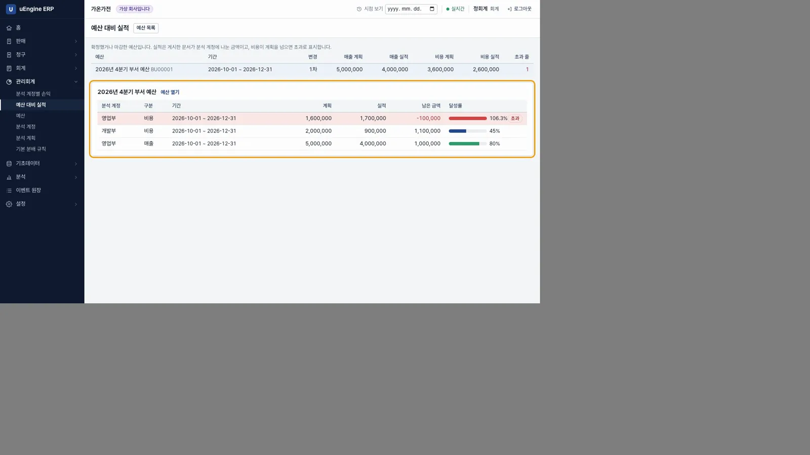
예산 목록
확인 문제#
관리회계를 켜기 전에 게시한 청구서도 부서별 손익에 들어가나요?
들어가지 않습니다. 해당 줄에는 분석 분배가 없고, 기본 분배 규칙도 게시할 때의 것만 쓰기 때문입니다. 필요하면 수동 전표에 분배를 적어 옮깁니다.
분배를 영업부 70%만 적으면 어떻게 되나요?
적용되지 않습니다. 계획마다 합이 100%여야 합니다. 나머지 30%도 나눠야 합니다.
확정한 예산의 금액을 바로 고칠 수 있나요?
고칠 수 없습니다. 사유를 적어 예산 변경으로만 바꿀 수 있습니다. 바꿀 때마다 차수가 올라가고 누가·언제·왜·어느 줄을 바꿨는지 이력에 남습니다.
예산을 넘는 청구서는 게시되지 않나요?
게시됩니다. 게시 전에 초과 금액을 알려 주지만 막지는 않습니다. 이 경고는 화면에서만 나오고, API나 MCP로 게시하면 나오지 않습니다.